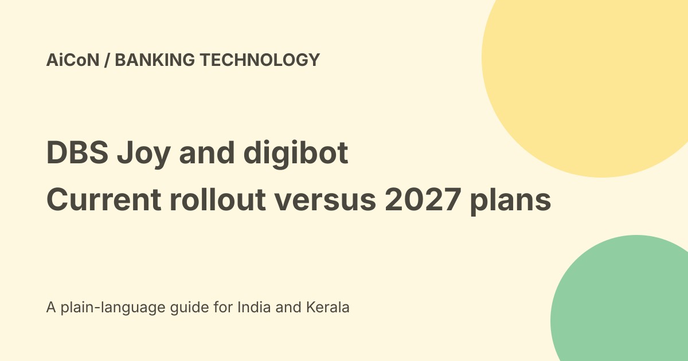

DBS Joy and digibot: agentic rollout and market limits
DBS Hong Kong announced an agentic upgrade on 25 September 2026. Joy begins progressive corporate and SME rollout in Hong Kong from 26 September. Retail digibot has enhanced generative AI, while its agentic task capabilities are described for 2027. Those are different products, markets and release stages.

What agentic means in this release
A conventional assistant may tell a customer where to find information. DBS describes an assistant retrieving and analysing supported account or transaction information inside the conversation.
That can reduce moving between screens. It does not mean the assistant can independently move money, act without login or perform every banking action.
Joy for businesses
The release concerns corporate and SME customers using DBS IDEAL in Hong Kong. Example questions include whether a payment went through, whether a transfer was made and how much was paid in fees.
Joy draws on the customer's account and transaction data to present an answer. Verify the transaction identifier and status, especially where a pending payment differs from a completed one.
Progressive rollout is not universal access
DBS says rollout begins on 26 September 2026. It does not establish that every corporate user has every capability on the first day.
Check the actual authenticated platform and the current bank notice. A release referring to a large user population is not a guarantee of access in your own account.
Retail digibot today and in 2027
The bank describes enhanced generative-AI digibot across Singapore, Hong Kong and Taiwan. It says agentic support for selected retail servicing journeys follows in 2027.
The future list includes balance and transaction checks, fee-waiver requests and blocking or replacing cards. Do not convert that list into a claim that those agentic actions are all live today.
Existing banking services may already have another way to do a task. That does not prove the new agentic conversation route is deployed.
Login and customer instructions
The release says agentic capabilities activate only after customers log in to the relevant DBS platform and act solely on instructions initiated by authenticated customers.
A message, website or document inside a conversation should not be treated as permission to change the customer's account. Review the intended action and account before confirming.
How a customer can check safely
- Open the bank's official app or verified website directly.
- Confirm the relevant market and customer platform.
- Sign in through the bank's normal process.
- Read the feature notice shown for the account.
- Start with a simple supported information request.
- Check the actual transaction details behind an answer.
- Review any proposed servicing action before approval.
- Keep confirmation and use human support if unclear.
No bank account was accessed, balance checked, card blocked or fee-waiver request submitted here.
Human support remains available
DBS says customer-service officers remain accessible for complex needs. An uncertain answer should not force a customer to repeat a risky action.
If a card is compromised or money is missing, use the bank's verified urgent support route rather than wait for a future chatbot feature.
Bank-reported results
The release reports a sixteen-percent reduction in hotline calls associated with Joy and says digibot resolved nine in ten queries digitally in the first half of 2026.
These are DBS figures. They do not establish the success rate of every agentic action or prove an individual payment was completed. Query resolution and transaction execution are different measures.
India and costs
The checked release concerns Singapore, Hong Kong and Taiwan, with the current Joy agentic rollout in Hong Kong. It does not establish the same capability for DBS India accounts.
No separate assistant tariff is stated in the release, but that does not mean all banking services or transactions are free. Check account terms and any fee shown for the actual action.
No India entitlement, currency conversion or transaction bill was verified. Do not sign into a foreign-market service merely because the bank shares a brand name.
Protect banking information
Use only the official banking route. Do not provide passwords, card security codes, PINs or OTPs to someone offering to activate an AI assistant.
Keep screenshots and transaction details private. A convenient conversational answer is still sensitive account information.
What changed since the original post?
We separate the current corporate Hong Kong rollout from future retail agentic features, preserve authenticated customer control and avoid turning the release into an India access or zero-fee guarantee.
Frequently asked questions
Are retail agentic tasks all live now?
The release places that phase in 2027.
Does this establish DBS India access?
No.
Was banking tested?
No.
Sources: Official DBS Hong Kong release. Checked 7 October 2026.